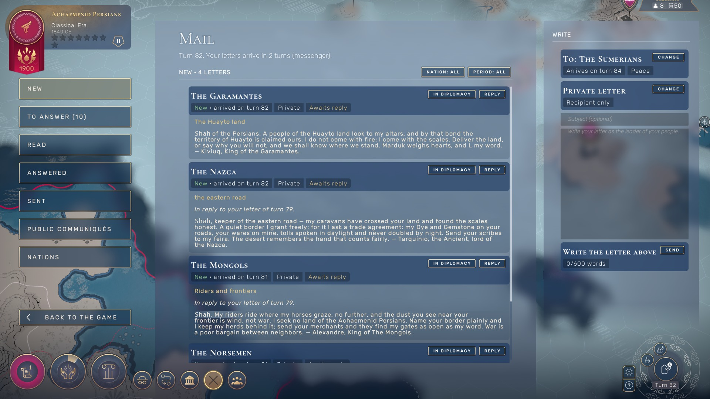
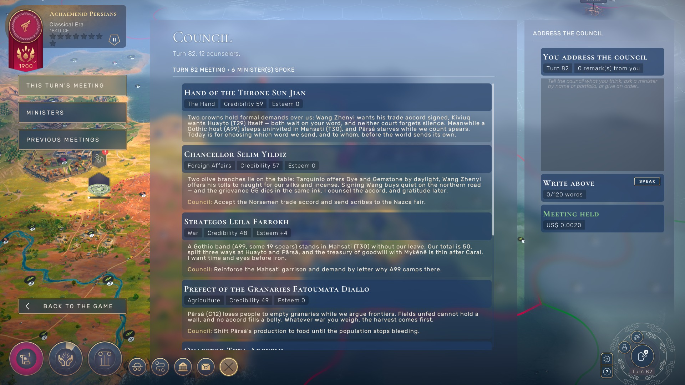
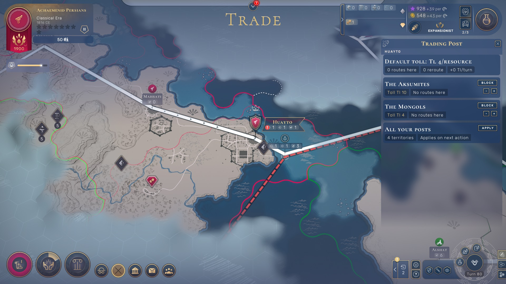

{{ t.h1a }} {{ t.h1b }}
{{ t.sub }}

{{ t.lH }}
{{ t.lP }}
“Kings and peoples, hear Alexandre. The Celt speaks of a draw where the field reads thirty to nothing, her sails still sleeping at Kuma and San Lorenzo. I sell no false peace: loose the ground you took and the gold you owe, and we sit. My feet quit Polis as my word promised — my honor keeps my ledger. To merchants, my fairs stay open.”
— Alexandre, King of the Mongols
“Leonardo counts steel at his door — I tell him plainly it is Gilgamés’ galley, not my hand. Wang Zhenyi wants Polis empty; my hull is penned by a blocked road, so it takes the long water home. The Celt offers a draw while squatting my ground: the account still reads thirty to nothing. Victor’s eight hundred stays unpaid; let him weigh iron if he dares.”
{{ t.cH }}
{{ t.cP }}

{{ t.spyP }}
{{ t.spyNote }}
{{ t.oH }}
{{ t.oP }}
My own floor stays mine
Ancestral, king of the Aksumites. I will not set my people’s own roof as tribute. Count my horses: none stands on your soil. Yet your host still anchors in Ain, my land, and your demand takes the floor my people sleep on. Call your standards home, reopen the frank road, and let no altar weigh two houses that once kept faith. Ḫattuša stays mine. — Arjuna, of the Huns.
{{ t.kH }}
{{ t.kP }}


{{ t.mH }}
{{ t.mP }}
{{ t.dNote }}

{{ t.tNote }}

{{ t.xH }}
{{ t.xP }}
{{ t.xNote }}
{{ t.iH }}
{{ t.reqYb }}
{{ t.reqNb }}
{{ t.fH }}
{{ t.endBody }}
— Realpolitik